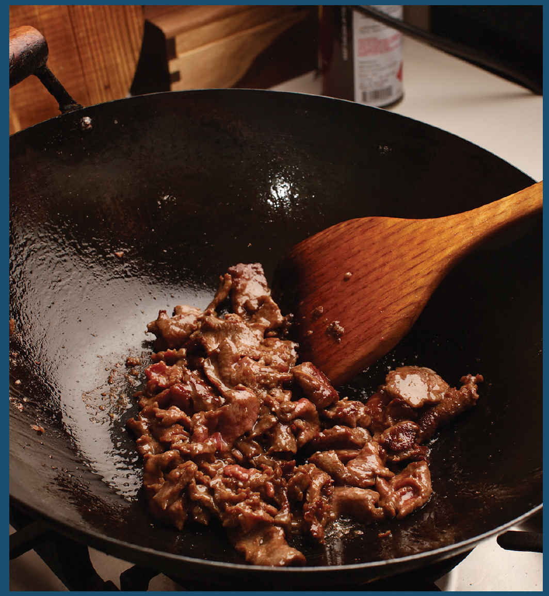

1.3 HOW TO STIR-FRY BEEF AND LAMB

When it comes to stir-fries, the best cuts of beef are ones that are loose-textured enough to absorb the flavorings but beefy enough to stand up on their own. Because you’re slicing them so thin, expensive, supertender cuts like strip or tenderloin are overkill. Much better are the so-called butcher’s cuts. These are my favorites, in order:
•Skirt steak, also labeled “fajita meat,” is a cut from the plate, the region near the belly, just behind the front leg of the steer. It comes in a thin strip about 18 inches long and 5 inches wide, with the grain running the short way. It’s my favorite cut for stir-fries.
•Flap meat, also sold as “sirloin tip” in the New England area, or bavette at fancy butchers, comes from the sirloin (that’s top side of the steer, right in front of its butt). It’s tough to track down, but if you can, jump on it, particularly if you can get it as a whole cut rather than the cubes or strips it often comes in. Its texture and flavor are similar to those of hanger (a little milder), but its large, uniform size makes it much easier to butcher.
•Hanger steak, known in French as the onglet, used to be strictly the domain of chefs and butchers but is becoming more and more widely available these days. Cut from the diaphragm, it is extraordinarily beefy and, when cut right, is as tender as you’d like. It’s got a slightly odd prism shape that can make the grain a little tough to identify. It also tends to command higher prices than the alternatives.
•Flank steak used to be one of the cheapest cuts at the butcher, until it saw a huge boom in popularity in the late nineties and aughts. Nowadays it commands prices nearly as high as loin cuts. Its advantage? You can find it pretty much anywhere. Unlike skirt steak, its grain runs the long way. The flavor is lightly metallic and not quite as robust as that of skirt.
Other cuts of beef that will do well in stir-fries are sirloin, boneless chuck, and bottom or top round. With these cuts you’ll need to take some additional care to make sure that all large swaths of fat and connective tissue are trimmed out and discarded and that your final slices are made against the grain of the beef.
Like all meats, beef should be kept well wrapped and used within a few days of purchase. Don’t slice the meat into strips until you are ready to marinate it. Preslicing will increase its surface area, increasing oxidation, which can cause the meat to discolor or develop livery off-flavors.